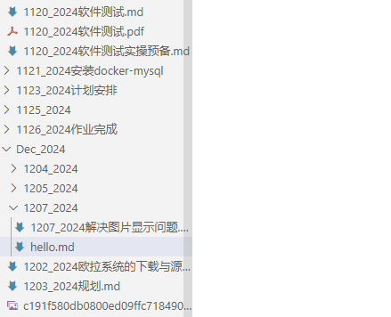
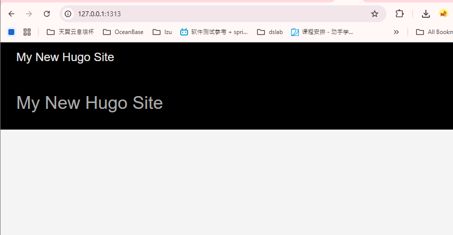
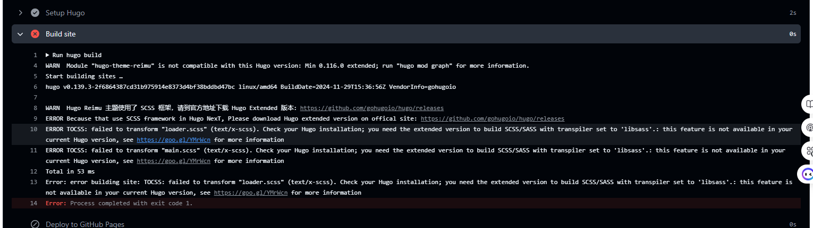
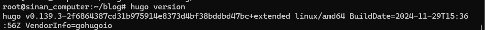

搭建自己的博客
参考zy的教程:
https://moxianhs.github.io/posts/hugo-configuration/ https://moxianhs.github.io/posts/github-pages-configuration/
建议参考的官方教程:
https://blowfish.page/zh-cn/docs/installation/
问题1, 本地运行hugo server显示空:
 有点奇怪, 是空的, 不知道少了什么
解决方法:
原来直接用 sudo apt install hugo 下载的hugo版本不是最新版本, 是0.93的, 首先更新到最新版本 更新到最新版本之后就出来了:
可能的原因:
hugo/theme/config.toml文件中有一些配置项中有对hugo版本的要求,现在一般情况下要求0.100以上,所以需要下载最新版本
sudo apt怎么安装某个软件的制定版本: sudo apt install package-name=version https://gohugo.io/getting-started/quick-start/ 
sudo apt怎么安装某个软件的制定版本: sudo apt-show-versions -a
问题2 遇到CI报错:“版本不对, themes要求使用extended版本 但是现在是标准版本”
 在构建过程中遇到, 这里需要重新安装hugo -extended 版本, 之前的估计不是拓展 
原因:
github的actions运行的默认采用标准版本,
解决方法:
在本地安装hugo extended版本, 然后将本地的hugo extended版本上传到github仓库, 然后在
本地仓库- settings - Pages中选定:
 从branch中进行部署, 部署的文件放在根目录的 ./.github/workflows/ 文件夹下,
新建: deploy.yaml 文件, 内容如下:
从branch中进行部署, 部署的文件放在根目录的 ./.github/workflows/ 文件夹下,
新建: deploy.yaml 文件, 内容如下:
name: Deploy Hugo site to GitHub Pages
on:
push:
branches:
- main
jobs:
deploy:
runs-on: ubuntu-latest
steps:
- name: Checkout repository
uses: actions/checkout@v3
with:
submodules: true
- name: Setup Hugo
uses: peaceiris/actions-hugo@v2
with:
hugo-version: "latest"
extended: true
- name: Build site
run: hugo build
- name: Deploy to GitHub Pages
uses: peaceiris/actions-gh-pages@v3
with:
github_token: ${{ secrets.GITHUB_TOKEN }}
publish_dir: ./public
将最新内容推送到github上
问题3 本地部署可以展示所有动态效果, 远程什么都没有
远程:

本地:

原因:
如果使用其他名字命名仓库，例如mox-blog，后面部署完成之后，访问地址就变成了moxianhs.github.io/mox-blog，如果不进行额外的配置，所有的 css、js、亦或是资源文件，都将找不到正确路径。
解决办法:
仓库 - settings -general - repository name 修改为 github-name.github.io, 如下所示

问题4: 本地可以点开放进去的md文件, 远程不行
远程只能看到标题, 点进去直接报错